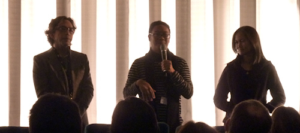

Ang Babae sa Septic Tank
Drei junge philippinische Filmemacher planen den großen Coup: Mit der Geschichte einer siebenfachen Mutter, die ihre Kinder in den Slums von Manila nur ernähren kann, indem sie sie an reiche Pädophile verkauft, wollen sie den weltweiten Durchbruch schaffen; nicht weniger als die großen Filmfestivals und der Oscar sind das erklärte Ziel ihres Elends-Pornos. Um dies zu erreichen, arbeiten die drei auf ihrem iPad kontinuierlich am Drehbuch, suchen den perfekten Slum für ihre Aufnahmen und casten eine berühmte Filmdiva für die Hauptrolle.
Was auf den ersten Blick noch wie ein Film über das Filme-machen aussieht, welcher den Auswahlverfahren der internationalen Filmfestivals einen kritischen Blick unterwirft, entpuppt sich während des Sehens als eher introspektive Darstellung des gegenwärtigen philippinischen Kinos. Der Film überzieht dabei die Rollenklischees als Grundkonzept seiner Charakterzeichnung gnadenlos und arbeit sie damit gleichzeitig prägnant heraus. Die pummelige und tagträumende Organisatorin Jocelyn dient dabei als Medium, um den immer neuen Ideen (Mockumentary, Musical) des Regisseur/Produzenten-Duos ein Bild zu geben. So variiert The Woman in the Septic Tank die in einem fünfminütigen Einstieg präsentierten wichtigsten Shots des Film-im-Films eines um das andere Mal und gibt den Gedankenspielen ein konkrete Form und dem Film gleichzeitig seinen Rhythmus.
Zwischendurch sind die drei Filmemacher immer wieder im Auto unterwegs oder werden in einem Café von einem verhassten Regiekollegen angesprochen, der gerade in Venedig einen Preis gewonnen hat und nun einen Schwanz von buckelnden Mitarbeitern mit sich herumschleppt und das nächste Jahr von einem Filmfestival zum anderen reisen will. Bei allem Neid sind sich die Parteien jedoch einig: Über das Independent-Kino wollen sie den großen Erfolg schaffen; wobei es mehr eine Indie-Fassade ist, die sich kalkuliert nach den Erwartungen des Publikums richtet. Dies unterstreicht der Film, indem er die Upperclass-Filmemacher in einem Slum zeigt, den diese bisher nur von Berichten kannten und nur nach seinem authentischen Aussehen bewerten, was die Bewohner des Slums quittieren indem sie das Auto der Filmer auseinandernehmen.
Es besteht also eine gut sichtbare Diskrepanz zwischen der Wahrnehmung des Ortes als Kulisse durch den Regisseur im Film und seiner bitteren realen Bedeutung als Zentrum der Armut. Diese dient den Filmemachern ohnehin nur als Vehikel, schließlich sind sie selber niemals damit in Berührung gekommen, was ihren Bemühungen um die Darstellung eines international akzeptiertes Bild des Slums lächerlich erscheinen lässt. Auf der anderen Seite hat The Woman in the Septic Tank natürlich selber dieses Problem, da es den Slum innerhalb eines bewusst übertriebenen Filmes darstellt - wie real ist also, was der Zuschauer auf der Leinwand als Kulisse zu sehen bekommt?
Bis kurz vor dem Ende macht dieses Spiel mit den Erwartungen der Zuschauer The Woman in the Septic Tank zu einem sehr unterhaltsamen Film. Leider greift der Film-im-Film am Ende aber auf den äußeren Film über und befriedigt mit einem Sturz der Diva in die titelgebende Klärgrube genau die Erwartungen, die man vorher noch satirisch kritisiert hat.
Die anwesenden Regisseur und Drehbuchautor konnten den Film nach der Vorführung in den richtigen Kontext rücken: Auf den Philippinen gibt es kein Geld für Filme abseits des Mainstreams, und so musste The Woman in the Septic Tank, der sich genau mit der Abhängigkeitssituation zwischen den Erwartungen des Publikums und den auf breite Vermarktung abzielenden Produzenten beschäftigt, aufgrund von mangelnder Finanzierung in nur 10 Drehtagen abgedreht werden. Dank der auch im realen Leben bekannten Schauspielerin Eugene Domingo wurde jedoch ein Zuschauerrekord auf den Philippinen erzielt und ich traue dem Film zu, das weltweit zu toppen.
